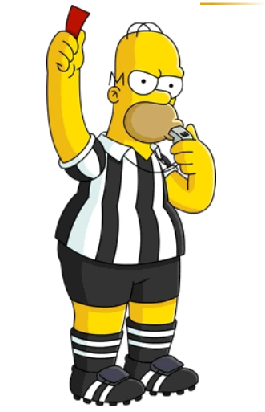
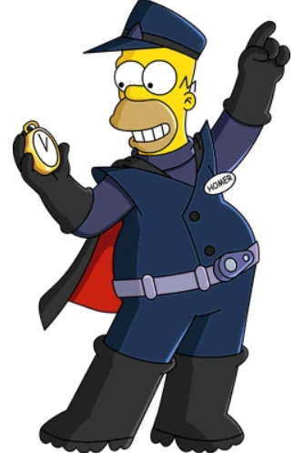
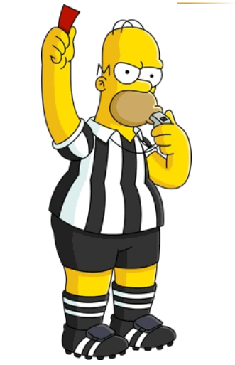
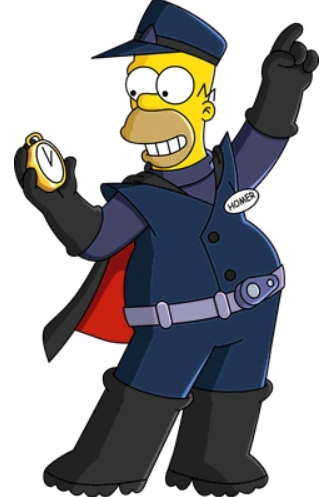
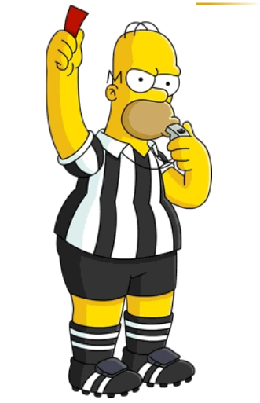
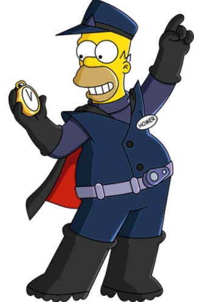
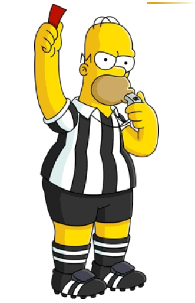
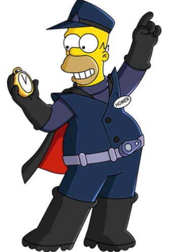

Homer Jay Simpson (born May 12, 1956 or 1969 or 1977 or 1983)[40] is the main protagonist of The Simpsons series (or show). He is the spouse of Marge Simpson and father of Bart, Lisa and Maggie Simpson. Homer is overweight (said to be ~240 pounds), lazy, and often ignorant to the world around him. Although Homer has many flaws, he has shown to have great caring, love, and even bravery to those he cares about and, sometimes, even others he doesn't. He also serves as the main protagonist of the The Simpsons Movie. Homer Simpson is 39 years old.